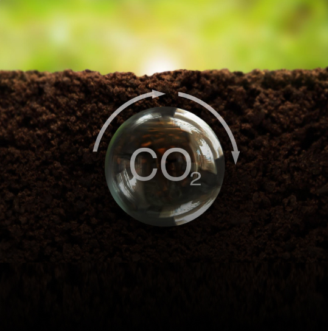
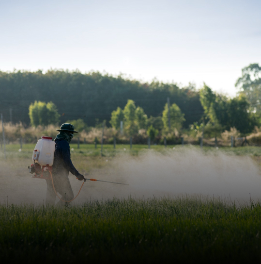
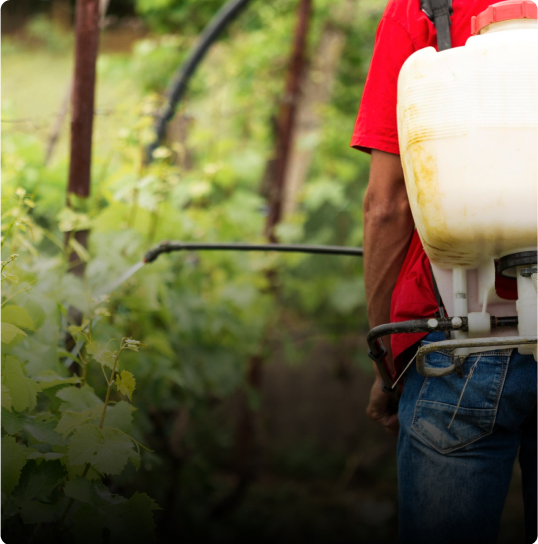
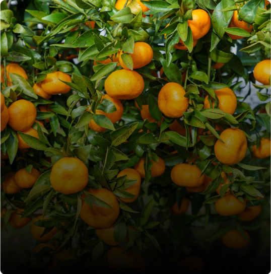

82.8 B L
of irrigation water saved
Because every drop counts

54,965 MT
reduction in greenhouse gas emissions.
Because cleaner the nature, cleaner the life.

1.51 L kg
reduction in chemical usage and counting.
Because your food should never fail on nutrition.

Up to 60%
deduction in pesticide cost.
Because your food should never fail on nutrition.
